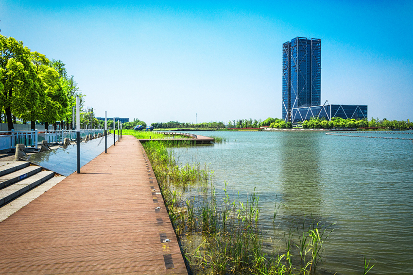

在河堤走
郭家豪│CWV穿戴式產品營運處
|  |
我不知道河堤的盡頭在哪裡，但我知道河堤上有一段旅程，是我最喜歡的。那是一段清爽、美好、充滿希望的旅程。
每當假日無事，我就會沿著河堤走走。不管是清晨還是傍晚，河風總是讓我神清氣爽。河水總是悠悠地流著，有時候還能看到幾隻白鷺在水中覓食。它們優雅而安靜，仿佛也在享受大自然的恩賜。
清晨的時候，太陽剛剛升起，金黃色的光芒照亮了整個河堤。樹木、花草、鳥鳴，都顯得格外生機勃勃。我感覺自己也像一朵花兒，被陽光喚醒了。我想著今天會發生什麼有趣的事情，心裡充滿了期待。
傍晚的時候，天色漸漸暗了，四周的景物也變得模糊了。河風吹走疲倦，溪流滌淨思慮。繼續緩步向前，欣賞著夕陽餘暉下的花花草草，真是再輕鬆不過了。我看著夕陽餘暉下的河面，閃爍著金色的光澤。我想著今天發生了什麼有意義的事情，心裡充滿了感激。
每當我走到一個轉彎處，我總會好奇地向前看。我想知道河堤的盡頭在哪裡，又會有什麼新奇的風景等著我。但其實我並不急於到達盡頭，望著持續延伸的堤道，我總期待著尚未走過的路程中，還有什麼美好的事物，不一樣的花草景緻，等我去發覺、去欣賞。